这两天跟着徐徐大佬学了一下爬虫，想用 python 爬一下cfda网站上的药品数据，徐徐试了**requests和selenium**的办法，
发现爬到的都是一串神秘字符串，如图，
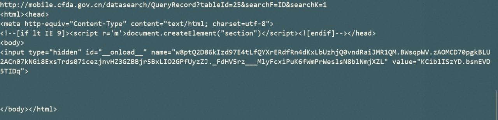
因为浏览器能正常打开，所以猜测是服务器端用了某种压缩/动态渲染，就想着能不能用 Selenium + PhantomJs/ChromeDriver 这种无头浏览器来弄，
结果每次结果都是空的，Google了各种方法，StackOverflow上的办法大多是加命令参数/改程序版本，
结果好像加了各种命令选项都不行，这是最后的代码，
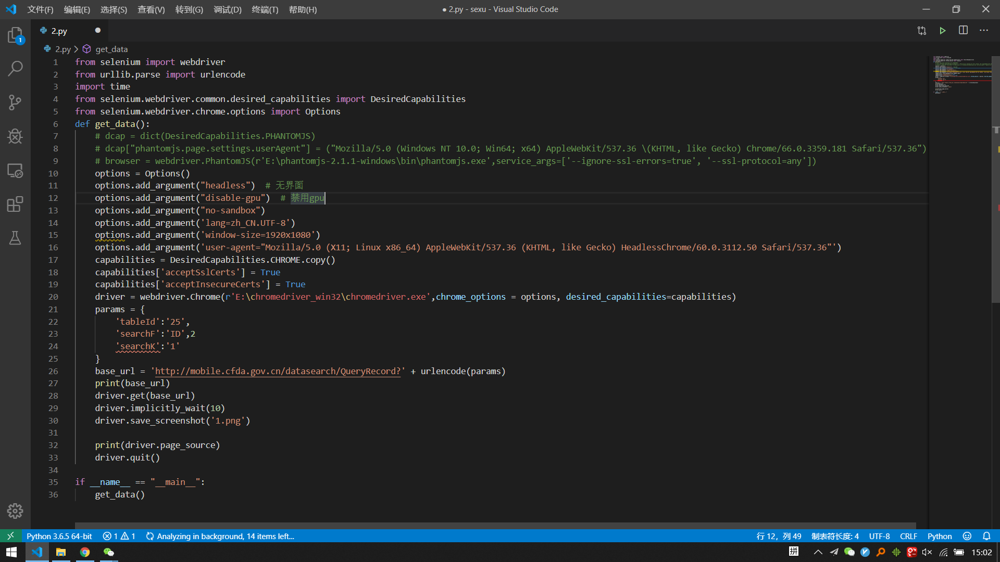
得到的driver.page_source结果永远都是空的：<html><head></head><body></body></html>
用driver.save_screenshot('1.png')截图也只能截到空白的图片。
后来去掉#options.add_argument("--headless"),弹出chrome浏览器的时候看了一下它的Cookie，发现比真实浏览器的少了一个名字叫JSESSIONID的Cookie，代码输出一下Cookie：print(driver.get_cookies())
发现确实只有后两个Cookie：
[{'domain': 'mobile.cfda.gov.cn', 'expiry': 1892368214, 'httpOnly': False, 'name': 'tuNQaYE2WCOr80T', 'path': '/', 'secure': False, 'value': '44Kn.5S4Qs9FYazHg9cvpAh7RvvkX6CHCFFLnsNw3CWLTJqQ6uRw0fI8bg5vrYGQEX6hJa0J.RsRZXrnLpG9ViGS6qQB.h0ihFdotILVHmKWMi8rTSe4I7l24OjHVvISZagZFyCmw23._.vUSDK3RsDU47zozbhS.mSlLRCcnw4tiTC6vzgime927xft3LdtTnQXjiYoqH.ONQGdKHPdqzeGiwGMEjgoxEebyhgXrJn2tAr5hqtntejwrroOnMyvm77CXd8_V5QkuK5aINNj2DYlMrReJ7uKRLSx3FeepzkKvtT5WFd.hbAsVYU5eqbtb_Mq'},
{'domain': 'mobile.cfda.gov.cn', 'expiry': 1892368213.81084, 'httpOnly': True, 'name': 'tuNQaYE2WCOr80S', 'path': '/', 'secure': False, 'value': 'hPNhBHTwoBvnsQ5znkw4QCEmXQJ7.5vsBR2r8eDpRyWyiYBaMsjvKkr75trGzXPe'}]
这是真实浏览器的Cookie：
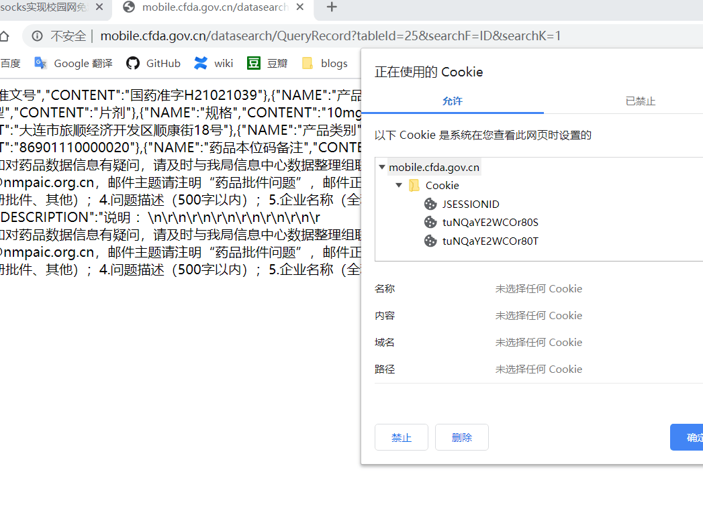
可能就是因为这个原因打不开浏览器。
后来试着去群里问了一下，感谢@姬大神还有群里的@耿欣大佬，他俩告诉我可以用**Postman**发请求，然后生成带Header的代码，如图，Postman能显示所有Cookie和Header信息,可以看到Header信息里，服务端用了gzip还有gb2312的编码格式(图3)：
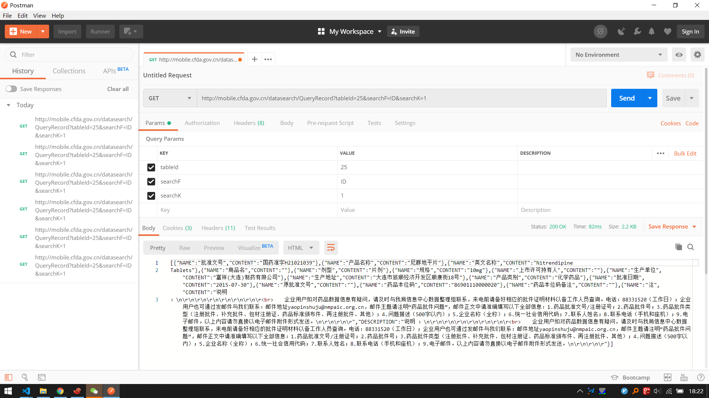
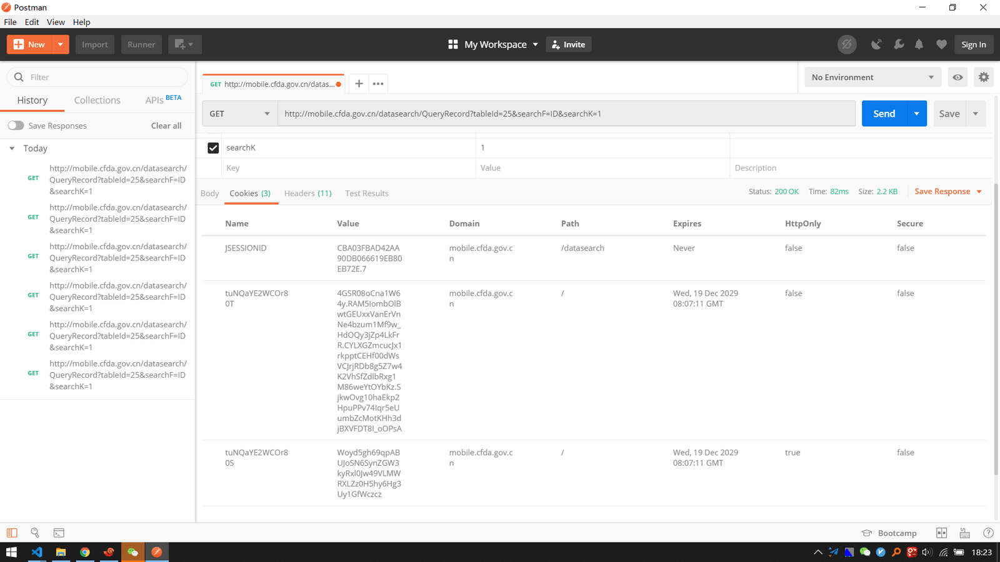
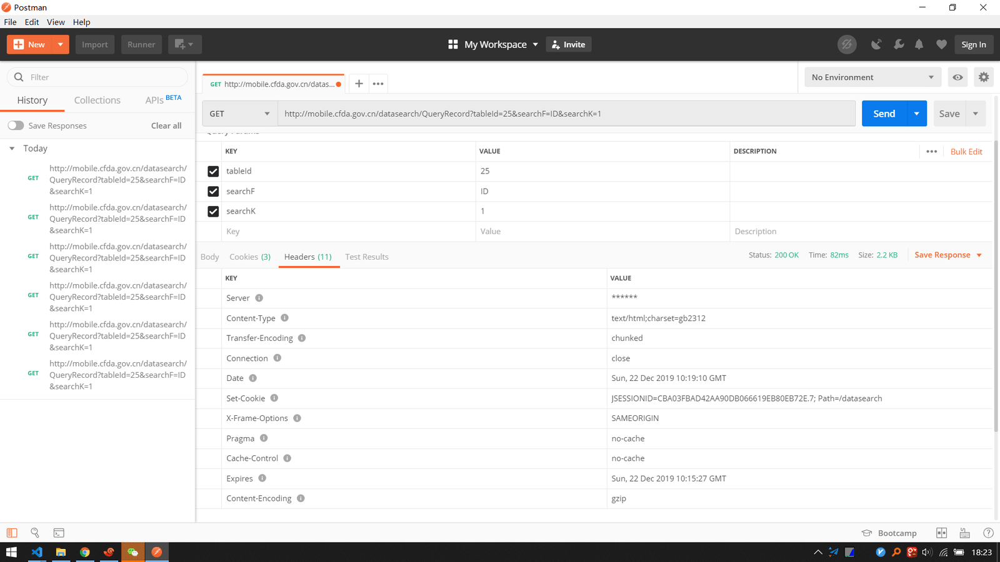
点击右上角的Code按钮可以生成各种版本的请求代码，生成之前可以设置一下 Include Temporary Headers 选项让生成的代码含有现在的**Headers**
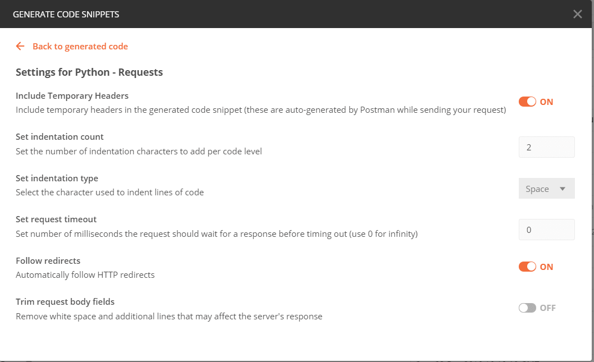
这是生成后的各个语言的请求代码：
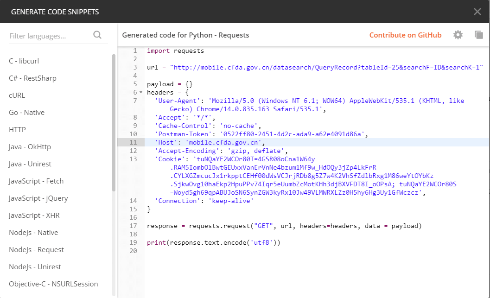
Go语言代码：
package main
import (
"fmt"
iconv "github.com/djimenez/iconv-go"
"io/ioutil"
"net/http"
)
func main() {
url := "http://mobile.cfda.gov.cn/datasearch/QueryRecord?tableId=25&searchF=ID&searchK=1"
req, _ := http.NewRequest("GET", url, nil)
req.Header.Add("User-Agent", "Mozilla/5.0 (Windows NT 6.1; WOW64) AppleWebKit/535.1 (KHTML, like Gecko) Chrome/14.0.835.163 Safari/535.1")
req.Header.Add("Accept", "*/*")
req.Header.Add("Cache-Control", "no-cache")
req.Header.Add("Postman-Token", "8e009b45-0973-4c64-be43-7342da2bcc5b,0446163c-7c01-421b-bd56-4a8187e3c9b3")
req.Header.Add("Host", "mobile.cfda.gov.cn")
// req.Header.Add("Accept-Encoding", "gzip, deflate") //取消gzip encoding
req.Header.Add("Cookie", "JSESSIONID=99245F57E359A2881EBD1EDA9E75BAFC.7; tuNQaYE2WCOr80T=4sU7uW4noiWDTog1A1IdD.VVRdBBArEE5ZSbl37hgTWe6gx.QLxVYNWdVReT4XPzCIC7qHjmtSndaWwnxhVv_mQRA3n9kf0.trsFj2qw55V57mjUfo2yTF_hmmPirw6Y0weeFRH7jCiMaT9QjGjxpMHycRBhHlb5q9FTKj5_qiKVKc1oAwNR_uUzZEvadkSud2uL; tuNQaYE2WCOr80S=8fryRXIPeZaSuESt8nxE6bkC4p7Zv0kxEE.lK2DtuCkxUSYIoIcKbXymZkp6z5Iq")
req.Header.Add("Connection", "keep-alive")
req.Header.Add("cache-control", "no-cache")
res, _ := http.DefaultClient.Do(req)
defer res.Body.Close()
body, _ := ioutil.ReadAll(res.Body)
fmt.Println("body文本:\n", string(body))
out := make([]byte, len(body))
iconv.Convert(body, out, "gb2312", "utf-8") //gb2312转utf-8
fmt.Println("out文本:\n", string(out))
}
Go语言版本的结果：
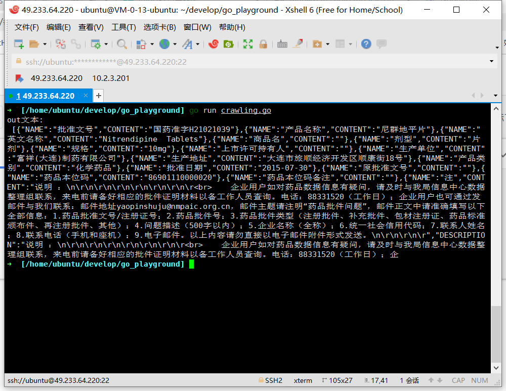
Python requests代码：
import requests
if __name__ == "__main__":
url = "http://mobile.cfda.gov.cn/datasearch/QueryRecord?tableId=25&searchF=ID&searchK=1"
payload = {}
headers = {
'User-Agent': 'Mozilla/5.0 (Windows NT 6.1; WOW64) AppleWebKit/535.1 (KHTML, like Gecko) Chrome/14.0.835.163 Safari/535.1',
'Accept': '*/*',
'Cache-Control': 'no-cache',
'Postman-Token': '285772ec-24e5-48f4-8a18-bf50f8f657ec',
'Host': 'mobile.cfda.gov.cn',
'Accept-Encoding': 'gzip, deflate',
'Cookie': 'JSESSIONID=F85C3CADAAE170E8618A7DD43CBFD125.7; tuNQaYE2WCOr80T=4GSR08oCna1W64y.RAM5IombOlBwtGEUxxVanErVnNe4bzum1Mf9w_HdOQy3jZp4LkFrR.CYLXGZmcucJx1rkpptCEHf00dWsVCJrjRDb8g5Z7w4K2VhSfZdlbRxg1M86weYtOYbKz.SjkwOvg10haEkp2HpuPPv74Iqr5eUumbZcMotKHh3djBXVFDT8I_oOPsA; tuNQaYE2WCOr80S=Woyd5gh69qpABUJoSN6SynZGW3kyRxl0Jw49VLMWRXLZz0H5hy6Hg3Uy1GfWczcz',
'Connection': 'keep-alive'
}
response = requests.request("GET", url, headers=headers, data = payload)
print(response.text)
Python运行结果：
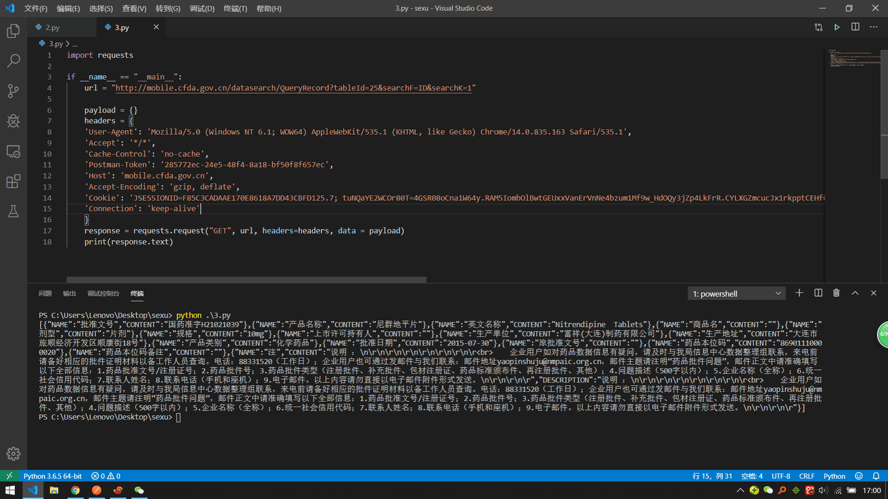
徐徐的办法
徐徐用Selenium模拟鼠标和键盘，右键然后点击A保存，把html代码保存到本地，如图：
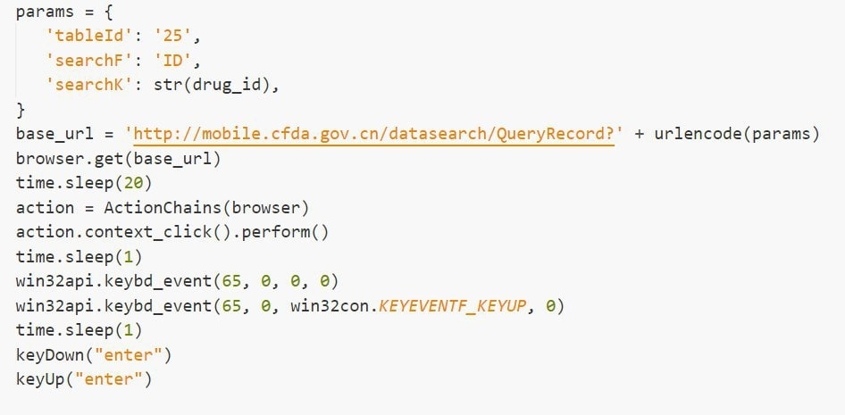
Update
晚上旺财又告诉我他发现Firefox driver的无头模式可以用。。。(为什么Phantom和Chrome就不行呢),贴代码：
from selenium import webdriver
import time
from selenium.webdriver.firefox.options import Options
options = Options()
options.add_argument("headless") # 无界面
options.add_argument("disable-gpu")
driver = webdriver.Firefox(options=options)
driver.get('http://mobile.cfda.gov.cn/datasearch/QueryRecord?tableId=25&searchF=ID&searchK=1')
time.sleep(1)
print(driver.page_source)
driver.quit()